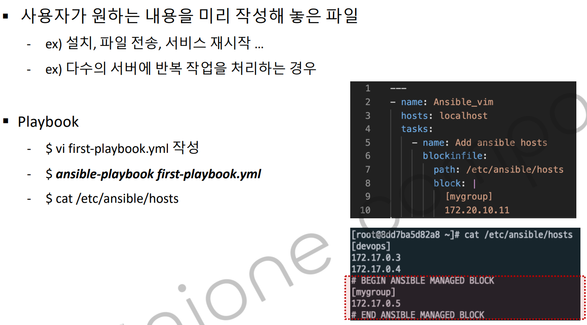
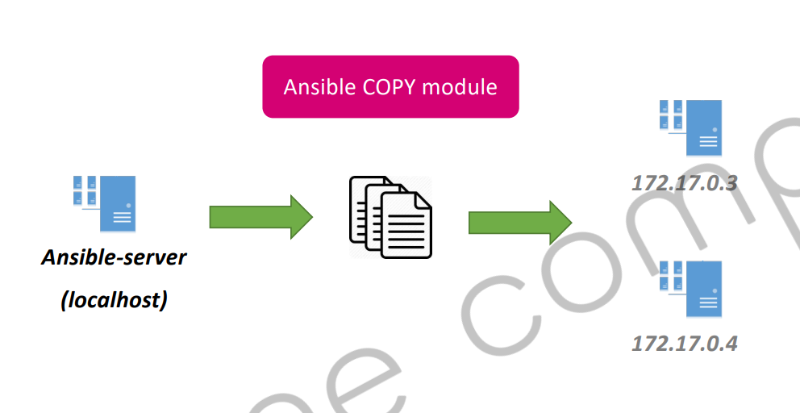
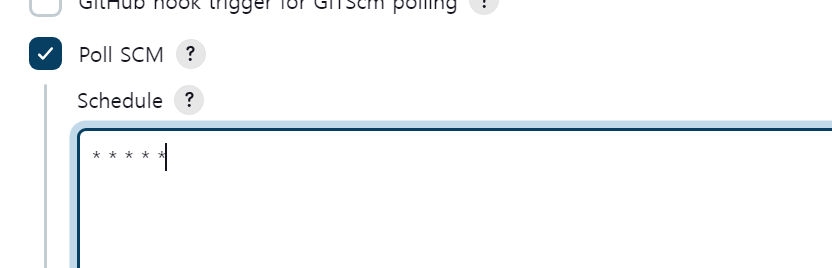
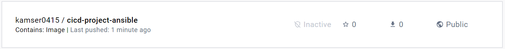

Ansible 명령어를 통해 인벤토리에 저장된 서버에 동일한 작업을 커맨드로 실행할 수 있습니다.
AnsiblePlaybook 이란 ?
사용자가 원했던 내용을 미리 작업해놓은 스크립트 파일입니다. 여러 작업을 해야한다면 여러번 커맨드를 실행해야합니다.

# Ansible 플레이북 예시: 웹 서버 설정
# 이름: 웹 서버 구성
# 호스트: web_servers 그룹
# 역할: Apache 웹 서버 설치 및 구성
- name: Configure web servers # 엔서블 플레이북 이름
hosts: web_servers # ip 이름, 적용시킬 그룹명
become: yes
tasks: # 해당 hosts에 어떤 작업을 진행할 지에 대한 설명입니다.
- name: Install Apache web server
yum:
name: httpd
state: present
tags:
- install
- apache
- name: Add custom configuration to Apache # 작업 이름을 작성
blockinfile: # 실질적인 작업
# 특정한 블럭을 만들어서 어떤 내용을 추가할 때 사용합니다.
path: /etc/httpd/conf/httpd.conf # 어떤 파일에 내용을 추가할지 작성
block: | # 파이프라인을 꼭 입력해야합니다!
# Custom configuration block
# 아파치 설정파일을 열어서 아래 내용을 추가한 것을 확인할 수 있습니다.
# blockinfile을 추가하면 이미지 처럼 블럭이 추가됩니다.
Listen 8080
<VirtualHost *:8080>
ServerAdmin webmaster@example.com
DocumentRoot /var/www/html
ErrorLog logs/example.com-error_log
CustomLog logs/example.com-access_log common
</VirtualHost>
create: yes
tags:
- apache
추가하려는 텍스트가 동일하다면 위치에 상관없이 멱등성이 보장됩니다. 약간의 텍스트가 수정되면 멱등성은 당연히 보장되지 않습니다.
플레이북 정리

ansible 커맨드 명령어로 ansible hosts 파일에 작성된 그룹이나 전체 서버에 동일한 작업을 할 수 있습니다. 이제 작성할 커맨드 명령어를 yaml 파일에 작성하여 playbook으로 등록하여 사용하면 다양한 작업을 미리 작성된 스크립트를 동해 명령할 수 있습니다.
예제-파일 복사
- name: Ansible Copy Example Local to Remote
hosts: devops
tasks:
- name: copying file with playbook
copy:
src: ~/sample.txt # 전송하려는 파일 주소
dest: /tmp # 타켓 위치
owner: root
mode: 0644
~: 틸드는 현재 디렉토리, 홈 디렉토리를 뜻합니다.
owner
"owner"는 파일 또는 디렉토리의 소유자의 이름이며, 이는 chown 명령에 전달되는 것과 같은 형식으로 사용됩니다.
mode
0644는 소유자에게는 읽기와 쓰기 권한만 부여하고, 그 외의 사용자에게는 읽기만 부여하는 퍼미션입니다.
여기서 chdir는 실행될 파일의 폴더 위치를 지정합니다. /root처럼 Dockerfile의 폴더 위치를 지정합니다.
현재 디렉토리 /root에서 hosts파일을 생성합니다.
rm -rf hosts
vi hosts ==> 내용 추가
cat hosts
[ansible]
172.17.0.4 ==> ansible 서버 ip입니다.
ansible-playbook -i hosts first-devops-playbook.yml
PLAY [all] ******************************************************************************************************************************************************************************
TASK [Gathering Facts] ******************************************************************************************************************************************************************
ok: [172.17.0.4]
TASK [build a docker image with deployed war file] **************************************************************************************************************************************
changed: [172.17.0.4]
PLAY RECAP ******************************************************************************************************************************************************************************
172.17.0.4 : ok=2 changed=1 unreachable=0 failed=0 skipped=0 rescued=0 ignored=0
현재 도커 이미지를 확인해보겠습니다
docker images
REPOSITORY TAG IMAGE ID CREATED SIZE
cicd-project-ansible latest 9dc69b36b3d3 About a minute ago 465MB
tomcat 9.0 1086ae687655 46 hours ago 457MB
이제 playbook.yml의 내용을 추가해서 도커 이미지를 실행하는 tasks 를 추가합니다.
vi first-devops-playbook.yml
--- 추가 구문
- name: create a container using cicd-project-ansible image
command: docker run -d -p 8080:8080 --name my_cicd_project_ansible cicd-project-ansible
젠킨스에서 빌드를 하면 외부 컨테이너는 8082:8080으로 포트 포워딩이 되어있고 내부 도커는 8080:8080으로 포워딩이 되어있기 때문에 호스트OS에서 8082로 접속하면 현재 작성된 도커 컨테이너에 접속이 가능합니다.
2단계 git pull SCM 활용

젠킨스를 수정해서 git 리포지토리의 상태가 변경되면 새로 받아와서 빌드를 하는 과정입니다. 결과는 실패합니다.
first-devops-playbook.xml을 활용해서 기존에 동작중인 컨테이너를 중지하고 삭제하는 스크립트를 추가합니다.
- hosts: all
vars:
container_name: my_cicd_project
image_name: cicd-project-ansible
tasks:
- name: a container stop {{ container_name }}
shell: docker stop {{ container_name }}
ignore_errors: yes
- name: remove a container {{ container_name }}
shell: docker rm {{ container_name }}
ignore_errors: yes
- name: remove a container {{ image_name }}
shell: docker rmi {{ image_name }}
ignore_errors: yes
- name: build a docker image with deployed war file
shell: docker build -t {{ image_name }} -f /root/Dockerfile /root
- name: create a container using cicd-project-ansible images
shell: docker run -d --name {{ container_name }} -p 8080:8080 {{ image_name }}
강사님 코드를 좀 더 수정해서 변수화를 해보았습니다.
[root@903520d0919e ~]# docker ps
CONTAINER ID IMAGE COMMAND CREATED STATUS PORTS NAMES
94b2ed1c4661 cicd-project-ansible "catalina.sh run" 26 seconds ago Up 26 seconds 0.0.0.0:8080->8080/tcp my_cicd_project
[root@903520d0919e ~]# docker images
REPOSITORY TAG IMAGE ID CREATED SIZE
cicd-project-ansible latest f2fdc895d964 29 seconds ago 465MB
tomcat 9.0 1086ae687655 47 hours ago 457MB
빌드가 성공하면서 이미지와 컨테이너 모두 빌드를 통해서 새롭게 생성되고 실행되는것을 확인할 수 있습니다.
도커허브에 이미지 자동화 관리하기
$ docker tag cicd-project-ansible kamser0415/cicd-project-ansible
$ docker images
REPOSITORY TAG IMAGE ID CREATED SIZE
kamser0415/cicd-project-ansible latest f2fdc895d964 32 minutes ago 465MB
cicd-project-ansible latest f2fdc895d964 32 minutes ago 465MB
tomcat 9.0 1086ae687655 47 hours ago 457MB
docker tag
도커 이미지는 불변성을 가지고 있기 때문에 기존 이미지를 수정하려면 Dockerfile을 수정해서 새로운 이미지를 생성해야합니다. 따라서 동일한 이미지에 대해 여러 개의 태그를 가질 수 있으며, 각각의 태그를 사용하여 해당 이미지를 참조할 수 있습니다.
ansible을 사용하는 이유는 사용하지 않는다면 기존 컨테이너를 지우는 과정을 command를 통해서 삭제를 해야했습니다. ansible은 스크립트 파일을 통해서 모듈과 같이 사용해서 제어할 수 있습니다.
도커 로그인하기
[root@903520d0919e ~]# docker login
Login with your Docker ID to push and pull images from Docker Hub. If you don't have a Docker ID, head over to https://hub.docker.com to create one.
Username: kamser0415
Password:
WARNING! Your password will be stored unencrypted in /root/.docker/config.json.
Configure a credential helper to remove this warning. See
https://docs.docker.com/engine/reference/commandline/login/#credentials-store
도커 허브 푸시하기
[root@903520d0919e ~]# docker push kamser0415/cicd-project-ansible
Using default tag: latest
The push refers to repository [docker.io/kamser0415/cicd-project-ansible]
b4a71dae12b0: Pushed
1570dd8f1c8b: Mounted from library/tomcat
7fb8da48a24e: Mounted from library/tomcat
547fa6fe2dfd: Mounted from library/tomcat
44514f573ec0: Mounted from library/tomcat
82b56c0ec2cb: Mounted from library/tomcat
eb81a90911ef: Mounted from library/tomcat
ab995379f7a6: Mounted from library/tomcat
1a102d1cac2b: Mounted from library/tomcat
latest: digest: sha256:eaf48676f7c44da5bfc0daaf465c1fdd3272304d5c9962f948fa50036591af35 size: 2206

이제 이미지를 올리는 작업을 이제 플레이북 파일에 작성하고 Ansible을 통해서 자동으로 push 하는 기능을 사용합니다.
강사님 코드
- hosts: all
vars:
docker_id: kamser0415
image_name: cicd-project-ansible
tasks:
- name: build a docker image with deployed war file
command: docker build -t {{ image_name }} -f Dockerfile .
args:
chdir: /root
- name: push the image on Docker Hub
command: docker push {{ docker_id }}/{{ image_name }}
- name: remove the docker image from the ansible server
command: docker rmi {{ docker_id }}/{{ image_name }}
ignore_errors: yes
모듈 사용
- hosts: all
vars:
docker_id: kamser0415
image_name: cicd-project-ansible
dockerfile_path: /root
tasks:
- name: Build an image and push it to my docker hub
docker_image:
build:
path: "{{ dockerfile_path }}"
name: "{{ docker_id }}/{{ image_name }}2"
push: yes
source: build
state: present
- name: Remove the local image
docker_image:
name: "{{ docker_id }}/{{ image_name }}2"
state: absent
코드를 이해하기에는 강사님 코드가 더 빠르게 읽혀집니다. 모듈을 사용할 경우 파이썬 SDK 를 설치해야합니다.